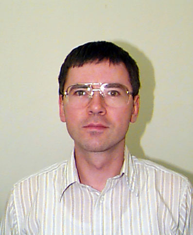

Term 1
|
Week 1
Thu 11 Oct 2012 5:00pm in E245
|
|
Milan Vojnovic
Microsoft Research, Cambridge
Consensus
|
Week
2
Thu 18 Oct 2012 5:00pm in E245
|
|
|
Week 3
Thu 25 Oct 2012 5:00pm in E245
|
|
Gregory Gutin
Royal Holloway
Parameterized Complexity of Access Control Problems
|
Week 4
Thu 1 Nov 2012 5:00pm in E245
|
|
Nic Georgiou
Durham
The simple harmonic urn
|
Week 5
Thu 8 Nov 2012 5:00pm in E245
|
|
Maura Paterson
Birkbeck
Secret Sharing and Ramps Schemes: Bounds and Constructions
|
Week 6
Thu 15 Nov 2012 5:00pm in E245
|
|
Vladimir Deineko
Warwick
Specially structured matrices in combinatorial optimisation
|
Week 7
Thu 22 Nov 2012 5:00pm in E245
|
|
Pim van 't Hof
Bergen
Ramsey numbers for line graphs and perfect graphs
|
Week 8
Thu 29 Nov 2012 5:00pm in E245
|
|
Olaf Beyersdorff
Leeds
How difficult is it to verify proofs?
|
Week 9
Thu 6 Dec 2012 5:00pm in E245
|

|
Tomasz Radzik
King's
New approximation bounds for some Maximum Network Lifetime problems in wireless ad-hoc networks
|
Week 10
Thu 13 Dec 2012 5:00pm in E245
|
|
Konrad Dabrowski
Durham
Partitioning Graphs Made Easy (or Not)
|
Term 2
|
Week 11
Thu 17 Jan 2013 5:00pm in E245
|
|
Thomas Erlebach
Leicester
Computational Complexity of Traffic Hijacking under BGP and S-BGP |
Week 12
Thu 24 Jan 2013 5:00pm in E245
|
|
|
Week 13
Thu 31 Jan 2013 5:00pm in E245
|
|
Anna Huber
Durham
Skew Bisubmodularity and Valued CSPs
|
Week 14
Thu 7 Feb 2013 5:00pm in E245
|
|
Bill Jackson
Queen Mary
Chromatic polynomials
|
Week 15
Thu 14 Feb 2013 5:00pm in E245
|
|
Vadim Lozin
Warwick
Parameterized Complexity and Ramsey Theory
|
Week 16
Thu 21 Feb 2013 5:00pm in E245
|
|
Andrei Krokhin
Durham
Robust algorithms for constraint satisfaction problems
|
Week 17
Thu 28 Feb 2013 5:00pm in E245
|
|
Maxim Sviridenko
Warwick
New Approximation Algorithms for the Minimimum Set Cover and Other Covering Problems
|
Week 18
Thu 7 Mar 2013 5:00pm in E245
|
|
|
Week 19
Thu 14 Mar 2013 5:00pm in E245
|
|
Rahul Santhanam
Edinburgh
Three Roads to Satisfiability
|
Term 3
|
Week 21
Thu 2 May 2013 2:00pm in E245
| | Mathilde Noual
Nice, France
Updating Automata Networks
|
Week 22
Thu 9 May 2013 5:00pm in E245
|
|
Chris Walshaw
Greenwich
Getting some perspective on hard problems: multilevel refinement for combinatorial optimisation
|